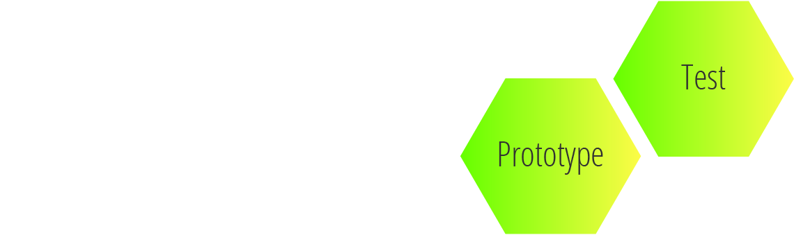
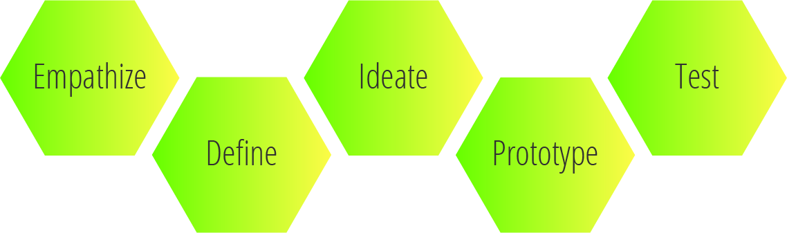

Disclaimer
The Challenge
Divvy is a software used by businesses to spend money within a certain budget and to collect and report this transactional data. The main functionality of Divvy is for employees to spend money. The users need to be able to both send and request money as well as spend the money. My main objective in this case study is to rework the mobile home screen to address customer feedback that has been given to fix any issues at hand.

Empathize
Empathizing with the users is the first thing I like to do in all my case studies. Afterall, understanding them is essential in meeting our main objective. To begin this project I was given a picture of the homescreen I was to rework and a list of "Key feedback points". To better illustrate the key feedback points, I have included the screen I was given as well. The key feedback points were as follows:
- Users do not know what to do when landing on this page.
- Sending/requesting funds are not easy to find.
- Users do not know which budget they are spending from or how to change budgets.
- Where to go to create a virtual card is not easy to find.
- Homescreen is cluttered overall
It would have been easy to take what they gave me here and start reworking the main screen immediately, but what fun would that be, and what kind of UX designer would I be? Not a great one! I needed to dig deeper than that. Why did users not know what to do on the landing page? What exactly did they think should happen here on this page? Where were they trying to go to send/request these funds and why? There were additional questions I wanted to answer. so that I could pinpoint the root of all the problems with the main screen. With that being said, I was able to set up 7 additional interviews with users to do some user testing. I wanted to not only confirm the feedback points I received from the original feedback points but pinpoint the root of all the problems that users had with the main screen.
For the interviews I gave them a brief background of the company (if they were not familiar with it) and then gave them a little time to look at the mainscreen. I then gave them a couple scenarios such as I was an employee in need of money, and asked them to send me money while in a specific app. I asked them to switch the budgets to sned me the money and to see how much balance was left. These questions would help me understand the user more and I was able to hear their thought process out loud. From this user research I was able to get some more necessary feedback to help me define the problem.

Define
The interviews were definitely a crucial part of my research. It helped define exactly what needed to be fixed and helped me progress through my process. Here are some of my personal "Key findings" that I needed to address in my design so that I could reach my objective.
That Icon is used for..uh...?
A main concern for the users I had testing the home screen was that the icons used on the app were very misleading and confusing. None of the users thought the airplane was used to initiate the send/request money. Most imagined this icon to be for cosmetic purposes only and some thought it was to signify that it was a travel card. From this additional research I now know why users were experiencing troubles finding the sending/requesting functionality. This would take some digging to find especially if this icon was viewed as not clickable. Since sending/requesting is a main part of the app, this definitely will need to be addressed.
'Active In' and Activate
After giving the users some time to look at the screen I then asked them to look away and to tell me what title of budget they were spending in to see if this was noticeable for them and then asked them why, or why not. Very few got this right until they looked at the screen again. Some expressed concerns about the wording used to label the budget and the hiearchy of where the budget title was. The words "active in" were not clear enough to all of our users. Since the budget name is listed as, "Active in Marketing team" and on what looks like to be a card, users took this to mean that this specific card was active and not necessarily the budget they were in. This also caused confusion for them as well since "activate your physical card" is also shown on the screen.
Switching Between Budgets
Even though "tap card to change budget" was in clear view I found most users having trouble switching between budgets. Eventually all users were able to find out how but while having them express their thought process out loud I found that most users were looking for some sort of dropdown menu to change budgets or wanted to swipe left and right on the card to change between budgets. A number of them mentioned they would click on "budgets" within the bottom navigation bar. A more intuitive process will help the user in switching between budgets
Bottom Navigation Titles
Most users did not find a whole lot they could do on the home screen. Where as these issues will be addressed it also brought to light some possible confusion with the bottom navigation bar titles. Since our users weren't able to find out how to send or request money from the home screen they wanted to click on transactions. Renaming this icon to something else such as history and making the send/request button more visible on the home screen would help to fix this. The Alert icon was also thought to be how you'd request money as the user thought they could alert someone when they needed money. Fixing a couple of the bottom navigational titles might eliminate some confusion further if the redesign of the home screen does not.
Competitive Analysis
"Competition is not only the basis of protection to the consumer, but is the incentive to progress."Herbert Hoover
Herbert Hoover said, "Competition is not only the basis of protection to the consumer, but is the incentive to progress." I like to look at the competition as I feel it provides some very good insight and responses to the questions what are they doing right, and what could be improved? I downloaded plenty of different financial apps and tested some out as much as I could.
Through this competitive analysis process I was able to come up with some strengths and weaknesses in competitor's designs. This will obviously benefit my re-design as I know some things I want to improve on and some things I know for sure won't work with what we are trying to accomplish.

Ideate
After pinpointing and defining what it was that users were struggling with I was able to ideate around that to come up with ideas on how the new home screen might look and feel. As I tried to address all the issues previously mentioned, I started with some pen and paper to begin. I then turned to some notecards to resemble more closely the mobile homescreen and started to refine more of the initial sketches I had done. From there I was able to build out some of these sketches to a mid level fidelity mock up on sketch. This way I could test out some of the ideas to see if any of my ideas were making progress towards my objective that I was given. Below are the notecard images and the mid fidelity mockups in sketch that were used to test users with.
After I was able to build these mockups in black and white it was time to test it again on users. I asked them a similar set of questions as I did with the first screen and had them speak out loud again so I could gain further insight. I wanted to make sure the functionality of the app was more simple and that users weren't confused at all before I messed around with any colors. Doing additional interviews provided a little more insight of how I'd like to display the home screen as I got invaluable feedback from the users.
Where to put the balance?
I had a few different positions I was toying around with to display the remaining balance of the budget. I had a couple users mention that they preferred the balance be on the card. To the users they associated this more with a gift card where the balance can often times be found on the card if one writes on it. Only difference is this one would be updated digitally. Rather than having a separate display for the balance, I chose to keep it on the card as it was more associated with the card.
Changing Budgets
I liked the idea of having an actual credit card be the main display of the budget. This is something well known to most people and I thought it would be familiar to most. However, I wanted to make sure swiping would be a natural instinct to the users. While testing my designs the users didn't have any difficulty with it. The users I tested the site on said that the carousel menu, along with the faded cards in the back helped them to know that there were other cards/budgets behind that they could swipe to view.
Adding Color
Once I established which home screen design worked best for our users I was able to start messing around with colors. The original screen I got had a gradient background with a white card. One of the feedback points that was said was that the home screen had an overall cluttered feel. I felt like the gradient added a little to the clutter so I wanted to go with a plain white background as white is cleaner. I thought that would add to the design and allow me to follow more of the design suggestions that were given.
On their design suggestions it said that Divvy should feel light, friendly and soft, and I think this is accomplished with the white background. They also said they wanted Divvy to have a feeling of material meaning they have elevation as a design element. I was able to achieve this by using shadows to make it look like the tiles, cards, and buttons were floating.
Above are some images of colors and layouts I messed around with. Ultimately I chose the design and layout that is shown in front of the image with 3 phone screens. (A better view will be seen in the prototyping section of this case study.) Overall, this was the design that proved to be more intuitive for the users and a simple process that they could follow. The users I tested on did not have any issues with completing the scenarios and questions I gave them.

Prototype & Test
There wasn't much to prototype since I was only focused on the home screen and none of the processes. However, I did animate the swiping feature I wanted to implement to switch between budgets. This is how I imagined it might look. I was able to test this home screen on some users. If I had more time with the project I would have liked to have done a little more testing on this.

Conclusion
This case study was fun to do and I really enjoyed it. The overall objective was to make it easier for users to know what to do on this specific page. The main focus on this page is to send and request money. Through the design I was able to achieves that. It makes the homescreen less cluttered and it is a clean overall feel and makes it more user friendly. This ultimately will give the user an overall better user experience.